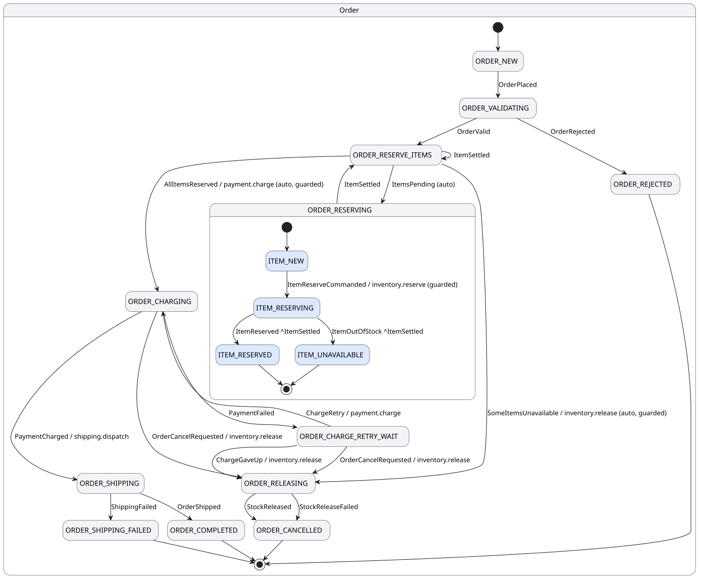
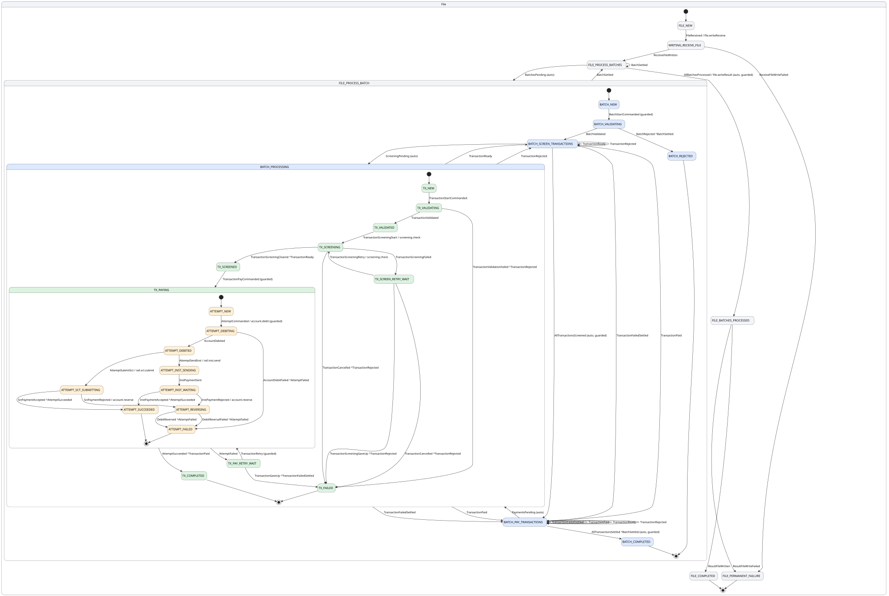

Two processes ship with voucha. Both diagrams below are generated from the compiled
definitions by voucha graph --plantuml and rendered with PlantUML. States are drawn inside states: a child
node type's machine is drawn inside the parent state in which its instances live, and each
hierarchy level has its own colour. A transition label reads event / effects,
^Event is an event bubbled up to the parent, and (guarded) marks a
transition with a hierarchy rule.
An order and its line items, in Java
Two levels, four effects, one aggregation. Each line reserves its stock; when every line has settled, the order either charges the customer and ships, or releases what was reserved and is cancelled. Charging twice is the one thing that must never happen, so an unknown outcome of the charge is resolved by asking the payment provider, never by charging again.
Source:
OrderProfile.java (the definition),
OrderHandlers.java (the handlers),
order_example_test.clj (the tests).
Run it with bin/voucha dev voucha.example.order/app.

A SEPA credit-transfer file, in Clojure
A pain.001 file as a debtor bank processes it, four levels deep: control-sum validation per batch, sanctions screening per transaction with a retry cycle, and per payment attempt a debtor-account debit, a send over SCT Inst (asynchronous, status inquiry on an unknown outcome) or SCT (synchronous), and a reversal of the debit if the rail rejects. Every term is public ISO 20022 and EPC vocabulary. It is the fixture for most of the test suite.
Source:
file_batch_transaction.clj (the definition),
batch.clj (the handlers),
example_test.clj (the tests).
Run it with bin/voucha dev voucha.example.batch/app.
